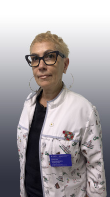
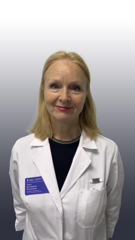

График работы поликлиникиПн–Пт: 08.00–20.00Сб–Вс: выходные
Почтовый адрес214004, г. Смоленск, ул. Кирова, д. 29б
Телефон регистратуры8 4812 65-11-56
Телефон справочной службы8 4812 65-11-56
Регистратура платных услуг8 4812 33-95-34
Горячая линия для подростков8 4812 64-40-00
Телефон бухгалтерии8 4812 65-11-59
Приёмная главного врача8 4812 38-72-96
Министерство здравоохранения Смоленской области8 4812 29-22-01
ТФОМС по Смоленской области8 4812 30-48-77
Росздравнадзор по Смоленской области8 4812 30-26-14
Роспотребнадзор по Смоленской области8 4812 38-25-10
Недовольны работой больницы?
Написать о проблемеНаши врачи
Все врачи →
Главная медицинская сестра
Захарова Наталья Викторовна

Заведующая отделением реабилитации, врач ФД, врач-кардиолог
Меймухина Светлана Владимировна

Заведующая отделением спортивной медицины
Мозалькова Ольга Викторовна
Новости
Все новости →
О Всероссийской горячей линии по профилактике клещевого энцефалита
Консультации по профилактике инфекций, передающихся клещами.

Всероссийский «Диктант здоровья — 2026»
Просветительская акция в рамках стратегии «Санпросвет».

Продолжает работу единый федеральный чат поддержки
Бесплатные медико-психологические консультации в круглосуточном режиме.
Отделения
Все отделения →Отделение спортивной медицины
- Адрес
- 214004, г. Смоленск, ул. Кирова, д. 29б
- Режим работы
- Пн–Пт: 08.00–20.00
- Телефон
- 8 4812 38-73-59
Отделение лечебной физкультуры
- Адрес
- 214004, г. Смоленск, ул. Кирова, д. 29б
- Режим работы
- Пн–Пт: 08.00–20.00
- Телефон
- 8 4812 65-11-56
Отделение медицинской реабилитации
- Адрес
- 214004, г. Смоленск, ул. Кирова, д. 29б
- Режим работы
- Пн–Пт: 08.00–20.00
- Телефон
- 8 4812 65-11-56